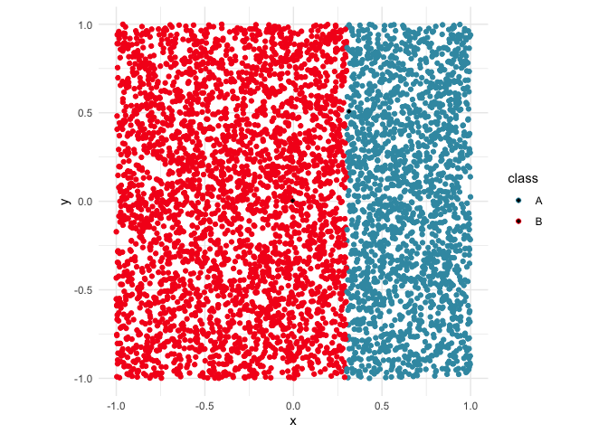

The goal of kumquat is to be a smaller simpler implementation of LIME. This is purely for demonstration purposes, and is not ideal to be used in production settings.
Kumquat is super easy to use. First you get your data set up and your model set up. Then you decide the data points of interest and kumquat will give you a list of information for each point you selected.
Below we will go through a step-by-step guide on setting up kumquats to be used.
Installation
You can install the development version of kumquat like so:
pak::pak("janithwanni/kumquat")Limitations
- Currently
kumquatonly supports datasets of two numeric variables and one categorical variable.
Usage
Step 1: Load Data
library(tidyverse)
#> ── Attaching core tidyverse packages ──────────────────────── tidyverse 2.0.0 ──
#> ✔ dplyr 1.2.0 ✔ readr 2.2.0
#> ✔ forcats 1.0.1 ✔ stringr 1.6.0
#> ✔ ggplot2 4.0.2 ✔ tibble 3.3.1
#> ✔ lubridate 1.9.5 ✔ tidyr 1.3.2
#> ✔ purrr 1.2.1
#> ── Conflicts ────────────────────────────────────────── tidyverse_conflicts() ──
#> ✖ dplyr::filter() masks stats::filter()
#> ✖ dplyr::lag() masks stats::lag()
#> ℹ Use the conflicted package (<http://conflicted.r-lib.org/>) to force all conflicts to become errors
library(colorspace)
data(d_vertical)
ggplot(d_vertical, aes(x = x, y = y, colour = class)) +
geom_point() +
scale_colour_discrete_divergingx(palette = "Zissou 1") +
theme_minimal() +
theme(aspect.ratio = 1)Step 2: Bundling the model
When setting up the model, kumquat expects a bundle object containing the model and its reference pointers.
library(randomForest)
#> randomForest 4.7-1.2
#> Type rfNews() to see new features/changes/bug fixes.
#>
#> Attaching package: 'randomForest'
#> The following object is masked from 'package:dplyr':
#>
#> combine
#> The following object is masked from 'package:ggplot2':
#>
#> margin
library(bundle)
# Get model ready
rfmodel <- randomForest(
class ~ x + y,
data = d_vertical
)
# Bundle model up
rfmodel_bundled <- bundle(rfmodel)Step 3: Decide on points of interest
# Decide on points of interest
find_closest <- function(pt, data) {
dst <- data |>
mutate(dst = sqrt((x - pt$x)^2 + (y - pt$y)^2))
return(which.min(dst$dst))
}
pois <- c(
# Case 1: the point of interest is not near the boundary
find_closest(tibble(x=0, y=0), d_vertical),
# Case 2: the point is on the decision boundary
find_closest(tibble(x=0.3, y=0.5), d_vertical)
)
ggplot(d_vertical, aes(x = x, y = y, colour = class)) +
geom_point() +
geom_point(data=d_vertical[pois, ], mapping=aes(x=x,y=y,fill=class), shape = 18, color = "black") +
scale_colour_discrete_divergingx(palette = "Zissou 1") +
theme_minimal() +
theme(aspect.ratio = 1)
Step 5: Examine the outputs
Case 1: The point is not near the decision boundary
In this case, according to ks[[1]]$local_model$importances both x and y are equally important.
# str(ks)
ks[[1]]
#> $perturbations
#> # A tibble: 441 × 3
#> x y pred
#> <dbl> <dbl> <fct>
#> 1 -0.105 -0.0966 B
#> 2 -0.105 -0.0866 B
#> 3 -0.105 -0.0766 B
#> 4 -0.105 -0.0666 B
#> 5 -0.105 -0.0566 B
#> 6 -0.105 -0.0466 B
#> 7 -0.105 -0.0366 B
#> 8 -0.105 -0.0266 B
#> 9 -0.105 -0.0166 B
#> 10 -0.105 -0.00659 B
#> # ℹ 431 more rows
#>
#> $local_model
#> $local_model$glm_predictions
#> 1
#> B
#> Levels: A B
#>
#> $local_model$importances
#> x y
#> 0.5 0.5
#>
#> $local_model$model
#> NULL
#>
#>
#> $point_of_interest
#> [1] 912
#>
#> $train_data
#> # A tibble: 5,000 × 3
#> x y class
#> <dbl> <dbl> <fct>
#> 1 0.885 0.615 A
#> 2 -0.264 0.649 B
#> 3 0.190 0.197 B
#> 4 -0.752 -0.749 B
#> 5 -0.817 0.661 B
#> 6 0.533 -0.305 A
#> 7 0.695 0.154 A
#> 8 0.143 -0.300 B
#> 9 -0.647 -0.795 B
#> 10 0.300 0.739 B
#> # ℹ 4,990 more rowsCase 2: The point is near the decision boundary
In this case, according to ks[[2]]$local_model$importances, x has an importance of -1000.3018471 and y has an importance of 0. Since the decision boundary was made using just the x variable we would expect the x variable to be more important in the model’s decision making process.
# str(ks)
ks[[2]]
#> $perturbations
#> # A tibble: 441 × 3
#> x y pred
#> <dbl> <dbl> <fct>
#> 1 0.214 0.408 B
#> 2 0.214 0.418 B
#> 3 0.214 0.428 B
#> 4 0.214 0.438 B
#> 5 0.214 0.448 B
#> 6 0.214 0.458 B
#> 7 0.214 0.468 B
#> 8 0.214 0.478 B
#> 9 0.214 0.488 B
#> 10 0.214 0.498 B
#> # ℹ 431 more rows
#>
#> $local_model
#> $local_model$glm_predictions
#> lambda.min
#> [1,] 2
#> [2,] 2
#> [3,] 2
#> [4,] 2
#> [5,] 2
#> [6,] 2
#> [7,] 2
#> [8,] 2
#> [9,] 2
#> [10,] 2
#> [11,] 2
#> [12,] 2
#> [13,] 2
#> [14,] 2
#> [15,] 2
#> [16,] 2
#> [17,] 2
#> [18,] 2
#> [19,] 2
#> [20,] 2
#> [21,] 2
#> [22,] 2
#> [23,] 2
#> [24,] 2
#> [25,] 2
#> [26,] 2
#> [27,] 2
#> [28,] 2
#> [29,] 2
#> [30,] 2
#> [31,] 2
#> [32,] 2
#> [33,] 2
#> [34,] 2
#> [35,] 2
#> [36,] 2
#> [37,] 2
#> [38,] 2
#> [39,] 2
#> [40,] 2
#> [41,] 2
#> [42,] 2
#> [43,] 2
#> [44,] 2
#> [45,] 2
#> [46,] 2
#> [47,] 2
#> [48,] 2
#> [49,] 2
#> [50,] 2
#> [51,] 2
#> [52,] 2
#> [53,] 2
#> [54,] 2
#> [55,] 2
#> [56,] 2
#> [57,] 2
#> [58,] 2
#> [59,] 2
#> [60,] 2
#> [61,] 2
#> [62,] 2
#> [63,] 2
#> [64,] 2
#> [65,] 2
#> [66,] 2
#> [67,] 2
#> [68,] 2
#> [69,] 2
#> [70,] 2
#> [71,] 2
#> [72,] 2
#> [73,] 2
#> [74,] 2
#> [75,] 2
#> [76,] 2
#> [77,] 2
#> [78,] 2
#> [79,] 2
#> [80,] 2
#> [81,] 2
#> [82,] 2
#> [83,] 2
#> [84,] 2
#> [85,] 2
#> [86,] 2
#> [87,] 2
#> [88,] 2
#> [89,] 2
#> [90,] 2
#> [91,] 2
#> [92,] 2
#> [93,] 2
#> [94,] 2
#> [95,] 2
#> [96,] 2
#> [97,] 2
#> [98,] 2
#> [99,] 2
#> [100,] 2
#> [101,] 2
#> [102,] 2
#> [103,] 2
#> [104,] 2
#> [105,] 2
#> [106,] 2
#> [107,] 2
#> [108,] 2
#> [109,] 2
#> [110,] 2
#> [111,] 2
#> [112,] 2
#> [113,] 2
#> [114,] 2
#> [115,] 2
#> [116,] 2
#> [117,] 2
#> [118,] 2
#> [119,] 2
#> [120,] 2
#> [121,] 2
#> [122,] 2
#> [123,] 2
#> [124,] 2
#> [125,] 2
#> [126,] 2
#> [127,] 2
#> [128,] 2
#> [129,] 2
#> [130,] 2
#> [131,] 2
#> [132,] 2
#> [133,] 2
#> [134,] 2
#> [135,] 2
#> [136,] 2
#> [137,] 2
#> [138,] 2
#> [139,] 2
#> [140,] 2
#> [141,] 2
#> [142,] 2
#> [143,] 2
#> [144,] 2
#> [145,] 2
#> [146,] 2
#> [147,] 2
#> [148,] 2
#> [149,] 2
#> [150,] 2
#> [151,] 2
#> [152,] 2
#> [153,] 2
#> [154,] 2
#> [155,] 2
#> [156,] 2
#> [157,] 2
#> [158,] 2
#> [159,] 2
#> [160,] 2
#> [161,] 2
#> [162,] 2
#> [163,] 2
#> [164,] 2
#> [165,] 2
#> [166,] 2
#> [167,] 2
#> [168,] 2
#> [169,] 2
#> [170,] 2
#> [171,] 2
#> [172,] 2
#> [173,] 2
#> [174,] 2
#> [175,] 2
#> [176,] 2
#> [177,] 2
#> [178,] 2
#> [179,] 2
#> [180,] 2
#> [181,] 2
#> [182,] 2
#> [183,] 2
#> [184,] 2
#> [185,] 2
#> [186,] 2
#> [187,] 2
#> [188,] 2
#> [189,] 2
#> [190,] 1
#> [191,] 1
#> [192,] 1
#> [193,] 1
#> [194,] 1
#> [195,] 1
#> [196,] 1
#> [197,] 1
#> [198,] 1
#> [199,] 1
#> [200,] 1
#> [201,] 1
#> [202,] 1
#> [203,] 1
#> [204,] 1
#> [205,] 1
#> [206,] 1
#> [207,] 1
#> [208,] 1
#> [209,] 1
#> [210,] 1
#> [211,] 1
#> [212,] 1
#> [213,] 1
#> [214,] 1
#> [215,] 1
#> [216,] 1
#> [217,] 1
#> [218,] 1
#> [219,] 1
#> [220,] 1
#> [221,] 1
#> [222,] 1
#> [223,] 1
#> [224,] 1
#> [225,] 1
#> [226,] 1
#> [227,] 1
#> [228,] 1
#> [229,] 1
#> [230,] 1
#> [231,] 1
#> [232,] 1
#> [233,] 1
#> [234,] 1
#> [235,] 1
#> [236,] 1
#> [237,] 1
#> [238,] 1
#> [239,] 1
#> [240,] 1
#> [241,] 1
#> [242,] 1
#> [243,] 1
#> [244,] 1
#> [245,] 1
#> [246,] 1
#> [247,] 1
#> [248,] 1
#> [249,] 1
#> [250,] 1
#> [251,] 1
#> [252,] 1
#> [253,] 1
#> [254,] 1
#> [255,] 1
#> [256,] 1
#> [257,] 1
#> [258,] 1
#> [259,] 1
#> [260,] 1
#> [261,] 1
#> [262,] 1
#> [263,] 1
#> [264,] 1
#> [265,] 1
#> [266,] 1
#> [267,] 1
#> [268,] 1
#> [269,] 1
#> [270,] 1
#> [271,] 1
#> [272,] 1
#> [273,] 1
#> [274,] 1
#> [275,] 1
#> [276,] 1
#> [277,] 1
#> [278,] 1
#> [279,] 1
#> [280,] 1
#> [281,] 1
#> [282,] 1
#> [283,] 1
#> [284,] 1
#> [285,] 1
#> [286,] 1
#> [287,] 1
#> [288,] 1
#> [289,] 1
#> [290,] 1
#> [291,] 1
#> [292,] 1
#> [293,] 1
#> [294,] 1
#> [295,] 1
#> [296,] 1
#> [297,] 1
#> [298,] 1
#> [299,] 1
#> [300,] 1
#> [301,] 1
#> [302,] 1
#> [303,] 1
#> [304,] 1
#> [305,] 1
#> [306,] 1
#> [307,] 1
#> [308,] 1
#> [309,] 1
#> [310,] 1
#> [311,] 1
#> [312,] 1
#> [313,] 1
#> [314,] 1
#> [315,] 1
#> [316,] 1
#> [317,] 1
#> [318,] 1
#> [319,] 1
#> [320,] 1
#> [321,] 1
#> [322,] 1
#> [323,] 1
#> [324,] 1
#> [325,] 1
#> [326,] 1
#> [327,] 1
#> [328,] 1
#> [329,] 1
#> [330,] 1
#> [331,] 1
#> [332,] 1
#> [333,] 1
#> [334,] 1
#> [335,] 1
#> [336,] 1
#> [337,] 1
#> [338,] 1
#> [339,] 1
#> [340,] 1
#> [341,] 1
#> [342,] 1
#> [343,] 1
#> [344,] 1
#> [345,] 1
#> [346,] 1
#> [347,] 1
#> [348,] 1
#> [349,] 1
#> [350,] 1
#> [351,] 1
#> [352,] 1
#> [353,] 1
#> [354,] 1
#> [355,] 1
#> [356,] 1
#> [357,] 1
#> [358,] 1
#> [359,] 1
#> [360,] 1
#> [361,] 1
#> [362,] 1
#> [363,] 1
#> [364,] 1
#> [365,] 1
#> [366,] 1
#> [367,] 1
#> [368,] 1
#> [369,] 1
#> [370,] 1
#> [371,] 1
#> [372,] 1
#> [373,] 1
#> [374,] 1
#> [375,] 1
#> [376,] 1
#> [377,] 1
#> [378,] 1
#> [379,] 1
#> [380,] 1
#> [381,] 1
#> [382,] 1
#> [383,] 1
#> [384,] 1
#> [385,] 1
#> [386,] 1
#> [387,] 1
#> [388,] 1
#> [389,] 1
#> [390,] 1
#> [391,] 1
#> [392,] 1
#> [393,] 1
#> [394,] 1
#> [395,] 1
#> [396,] 1
#> [397,] 1
#> [398,] 1
#> [399,] 1
#> [400,] 1
#> [401,] 1
#> [402,] 1
#> [403,] 1
#> [404,] 1
#> [405,] 1
#> [406,] 1
#> [407,] 1
#> [408,] 1
#> [409,] 1
#> [410,] 1
#> [411,] 1
#> [412,] 1
#> [413,] 1
#> [414,] 1
#> [415,] 1
#> [416,] 1
#> [417,] 1
#> [418,] 1
#> [419,] 1
#> [420,] 1
#> [421,] 1
#> [422,] 1
#> [423,] 1
#> [424,] 1
#> [425,] 1
#> [426,] 1
#> [427,] 1
#> [428,] 1
#> [429,] 1
#> [430,] 1
#> [431,] 1
#> [432,] 1
#> [433,] 1
#> [434,] 1
#> [435,] 1
#> [436,] 1
#> [437,] 1
#> [438,] 1
#> [439,] 1
#> [440,] 1
#> [441,] 1
#>
#> $local_model$importances
#> x y
#> -1000.302 0.000
#>
#> $local_model$coef_mat
#> lambda.min
#> (Intercept) 298.9126
#> x -1000.3018
#> y 0.0000
#>
#> $local_model$model
#>
#> Call: glmnet::cv.glmnet(x = X, y = y, nfolds = nfolds, family = "binomial", alpha = alpha)
#>
#> Measure: Binomial Deviance
#>
#> Lambda Index Measure SE Nonzero
#> min 5.115e-05 98 0.001368 0.0002150 1
#> 1se 5.614e-05 97 0.001496 0.0002354 1
#>
#>
#> $point_of_interest
#> [1] 1915
#>
#> $train_data
#> # A tibble: 5,000 × 3
#> x y class
#> <dbl> <dbl> <fct>
#> 1 0.885 0.615 A
#> 2 -0.264 0.649 B
#> 3 0.190 0.197 B
#> 4 -0.752 -0.749 B
#> 5 -0.817 0.661 B
#> 6 0.533 -0.305 A
#> 7 0.695 0.154 A
#> 8 0.143 -0.300 B
#> 9 -0.647 -0.795 B
#> 10 0.300 0.739 B
#> # ℹ 4,990 more rowsThe output from kumquat will be a list containing the following elements.
perturbations: A data.frame of perturbations used to fit the local model
local_model: Details of the glmnet model fit. This is also a list containing the following elements. In the case where the point of interest is not near the model’s decision boundary, the
modelcomponent will be NULL and the importances will be distributted equally.glm_predictions
importances: The importances of each feature
coef_mat: The coefficients
model: the glm_net model object
point_of_interest
train_data